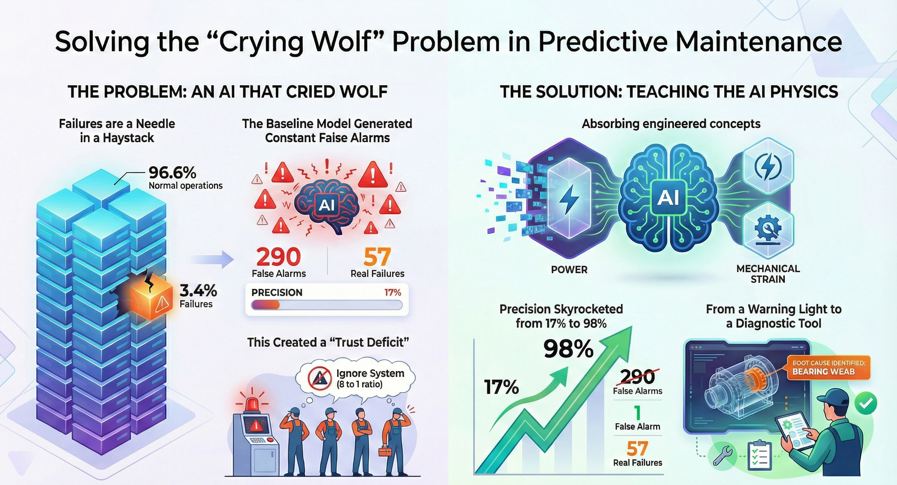
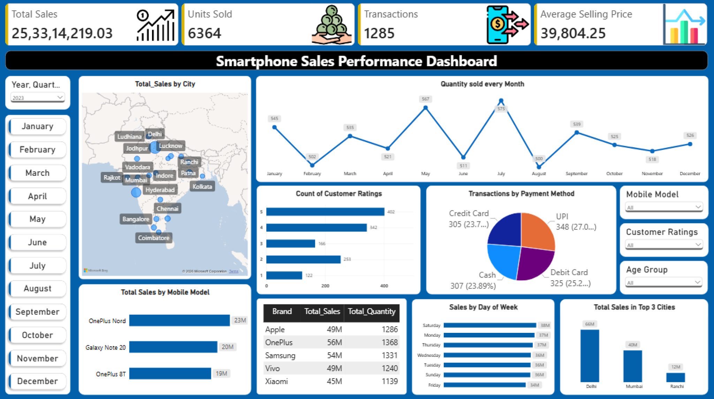
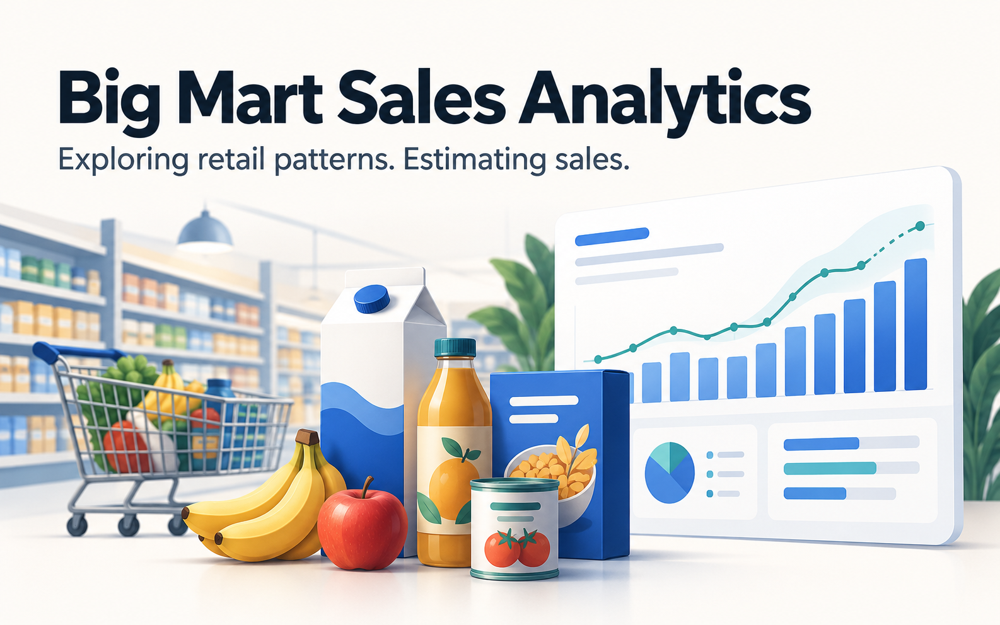
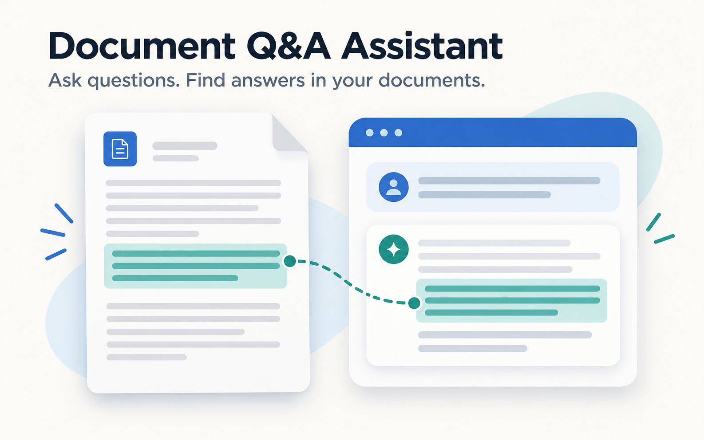

Programming & Data Preparation
Python, SQL, pandas, NumPy, data cleaning, transformation, and validation
Siddharth Namdeo Shelke
I work with data from preparation and pipelines through to analysis, dashboards, and machine learning, using Python, SQL, and BI tools. At Lear and Ottobock, I built reporting automation, developed Python workflows and interactive dashboards, and evaluated predictive models connecting business needs with practical data solutions.
02 / ABOUT & SKILLS
I’m a data professional with a master’s in Data Science. I enjoy figuring out unfamiliar problems and discovering what data can tell us, including answers to questions we hadn’t thought to ask. What interests me most is helping businesses use those answers to grow and work better. At Lear, I brought reporting automation and analysis together across seven plants; at Ottobock, I developed Python workflows and evaluated machine learning predictions. Those experiences shaped what I enjoy building: solutions that reduce repetitive work, give people time to investigate, and help them make decisions that save time and money.
Python, SQL, pandas, NumPy, data cleaning, transformation, and validation
Power BI, Tableau, Excel, data visualisation, statistical analysis, KPI reporting
ETL/ELT, data integration, data modelling, Palantir Foundry: Pipeline Builder, Ontology, Workshop
scikit-learn, XGBoost, TensorFlow, model evaluation, Streamlit, RAG, LangChain, ChromaDB
Related work
03 / EXPERIENCE
Data Science Intern · February 2026 – August 2026
Ottobock develops medical technologies, including prosthetics and orthotics, that support mobility and independence. I worked in a research environment, building reusable Python workflows to prepare complex 3D and clinical data, implement modelling experiments, and evaluate predictions.
90+ datasetsApproximately 40,000 sampled 3D points each
LOOCVAcross 90+ cases
This work formed part of a research project. Detailed methods, model architecture, and sensitive project materials cannot be shared publicly.
Data Analyst Intern · February 2025 – April 2025
Lear develops automotive seating and electrical systems for vehicle manufacturers worldwide. I worked with its Continuous Improvement team to simplify monthly reporting across seven plants and help teams investigate performance more easily.
7 plantsMonthly reporting
85%Estimated reduction in manual reporting effort
04 / PROJECTS
Showing all 4 projects

How can maintenance move from reacting to machine failures to anticipating them? I explored how sensor data and machine learning could flag potential failures earlier, helping businesses plan maintenance and reduce costly, unplanned downtime.
The final model reported 98% precision and 82% recall, compared with 17% precision and 84% recall for the baseline.
Reported in the supplied presentation; code validation remains pending.
Python · pandas · scikit-learn · Streamlit
Explore the project
What can a retailer learn by looking beyond total sales? I built an interactive Power BI dashboard to explore questions about products, cities, and customer behaviour, then drill into the patterns to investigate what might explain changes in performance.
Sales fell 3.31%, while transactions remained almost unchanged. Both units sold and average selling price declined.
Power BI · Power Query · DAX
Explore the analysis
What does it take to turn imperfect retail data into useful sales estimates? I explored product and outlet records, cleaned missing and inconsistent values, and built an XGBoost regression workflow to understand what the available data could predict.
8,000+ retail records explored through data cleaning, visual analysis, and sales modelling.
Python · pandas · Seaborn · scikit-learn · XGBoost
Explore the analysis
How can a long PDF become easier to work with? I built a document assistant that creates a summary, answers questions using relevant passages, and lets users refine the summary through conversational instructions.
Summarise · Ask · Refine - three connected workflows in one Streamlit prototype.
Python · Streamlit · LangChain · ChromaDB · Gemini
Explore the project05 / EDUCATION
University of Europe for Applied Sciences
September 2024 - August 2026
Grade: 1.7 (German grading scale)
Savitribai Phule Pune University
2020 - 2024
Grade: 1.8 (German grading scale)
06 / PUBLICATION & CERTIFICATES
2023 4th International Conference for Emerging Technology (INCET) · IEEE · 2023
Co-authored a paper exploring the use of convolutional neural networks for detecting whether a person is wearing a face mask.
DOI: 10.1109/INCET57972.2023.10170036
View publicationKI-Campus · October 2026
Studied agent architectures, autonomous and multi-agent workflows, and the engineering practices needed to make agents reliable.
View certificateStanford University Online · March 2024
Completed the online Introduction to Statistics course authorised by Stanford Online and offered through Coursera.
View certificate07 / CONTACT
Have a data challenge in mind, a role you think I’d suit, or an interesting idea to discuss? I’d love to hear what you’re working on and explore how I could contribute.